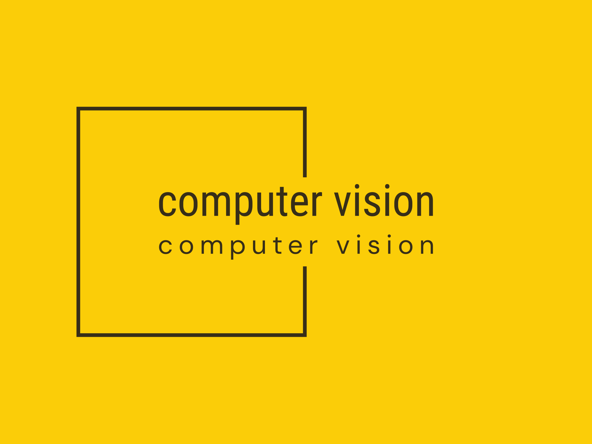

Automatyczna analiza obrazu

Wstęp
Niniejsza książka powstała na potrzeby prowadzenia wykładu z Automatycznej analizy obrazu. Jest wynikiem moich doświadczeń z automatyczną analizą obrazu. W pisaniu tego kompendium wiedzy na temat Computer Vision bardzo pomocne były dwie pozycje literaturowe (Burger i Burge 2016; Szeliski 2022). Oprócz wspomnianych książek poświęconych wizji komputerowej, ważne są również pozycje objaśniające arkana deep learning. Wśród nich należy wymienić (Goodfellow, Bengio, i Courville 2016; Ketkar i Santana 2017; „Deep Learning with Python, Second Edition”, b.d.; Chollet i Allaire 2018). Ponadto zostaną wykorzystane nieprzebrane zasoby internetu - na stronach takich jak https://stackoverflow.com czy https://github.com można znaleźć rozwiązania do niemal każdego zadania.
Na potrzeby zajęć laboratoryjnych będą dodatkowo potrzebne pewne programy komputerowe i biblioteki:
- Fiji - darmowy program będący nakładką na program ImageJ. Służy on do operacji na zdjęciach. Do pobrania ze strony https://fiji.sc/; <<<<<<< HEAD
- Python - język programowania, w którym można wykonać niemal dowolne zadanie z zakresu automatycznej analizy obrazu. Przez instalacje Python-a rozumiem zainstalowanie odpowiedniej dystrybucji tego programu (np. dla Windows zaleca się instalację dystrybucji Anconda lub Miniconda). Po szczegóły dotyczące instalacji Pythona na Windows odsyłam na stronę https://support.posit.co/hc/en-us/articles/1500007929061-Using-Python-with-the-RStudio-IDE;
- Po zainstalowaniu Pythona, trzeba też zainstalować dwie bardzo ważne biblioteki pythonowe do budowania i uczenia sieci głębokiego uczenia
tensorflow - jest end-to-end platformą typu open-source do uczenia maszynowego. Jest to kompleksowy i elastyczny ekosystem narzędzi, bibliotek i innych zasobów, które zapewniają przepływy pracy z wysokopoziomowymi interfejsami API. Ramy oferują różne poziomy koncepcji, abyś mógł wybrać ten, którego potrzebujesz do budowania i wdrażania modeli uczenia maszynowego;
keras - jest wysokopoziomową biblioteką do budowy sieci neuronowych, która działa na bazie TensorFlow, CNTK i Theano. Wykorzystanie Keras w deep learningu pozwala na łatwe i szybkie prototypowanie, a także płynne działanie na CPU i GPU. Aby zainstalować zarówno tensorflow, jak i keras z obsługo CPU lub GPU polecam instrukcję w filmie https://youtu.be/PnK1jO2kXOQ;
- OpenCV - jest biblioteką (ale nie programu R) funkcji programistycznych skierowanych głównie do wizji komputerowej czasu rzeczywistego. Instalację w Windows można znaleźć pod adresem https://docs.opencv.org/4.x/d3/d52/tutorial_windows_install.html;
- Biblioteki R-owe potrzebne do budowy modeli i obsługi obrazów, to:
reticulate- biblioteka pozwalająca na wykorzystanie bibliotek i funkcji Python-a w R;magick- biblioteka potrzebna do różnego rodzaju transformacji obrazów;tensorflow- biblioteka R-owa pozwalająca na wykorzystanie funkcji tensorflow Pythona;keras- biblioteka R-owa pozwalająca na korzystanie z funkcji pakietu keras Pythonowego.
=======
- Python - język programowania, w którym można wykonać niemal dowolne zadanie z zakresu automatycznej analizy obrazu. Przez instalacje Python-a rozumiem zainstalowanie odpowiedniej dystrybucji tego programu (np. dla Windows zaleca się instalację dystrybucji Anconda lub Miniconda). Po szczegóły dotyczące instalacji Pythona na Windows odsyłam na stronę >>>>>>> origin